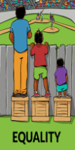
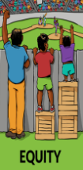

mean each individual or group of people
is given the same resources or opportunities

What We Will Learning Here?
Definition of Equality and Equity
The difference between Equality and Equity
Types of Equality and Equity
Examples of Equality and Equity
Equity
mean
That each person has different circumstances and is customized exactly
The resources and opportunities needed to reach an equal outcome

The difference between Equality and Equity:>
It can be said that the basic difference between equity and equality is
that judges are concerned with justice and fairness in everything that
comes to Hollywood regarding the legal systems in the country. So that
equity is the individual’s rights to what he
deserves and is entitled to receive, and this may not
be equal for people with others due to the different types
of entitlement between individuals, while our aim is to reach individuals to a
place between them all and treat them in a similar way without any difference
Types of Equality and Equity
Equality:
Natural equality:
Despite the differences in physical
characteristics and psychological or mental abilities
among humans, all individuals must be treated as equal,
and they have the right to obtain all rights and freedoms
Social equality:
This type is represented by giving rights
and opportunities to all individuals of all
categories without any discrimination, such as:
civil rights, property rights, the right of expression,
and the right to obtain services and obtain goods.
Civil equality:
This equality is based on granting equal rights
and freedoms to all individuals and
groups of society, and treating them
all equally within the framework of the law.
Political equality:
This equality is based on equal
opportunities for everyone to
participate in the political process.
Equity:
Distributive justice:
also known as economic justice.
This type of justice is concerned with the moral
concern or material goods that individuals receive. The
origin of this justice goes back to the social system and
socialist principles based primarily on
the principle of equality, and through them the effects
of justice appear in society.
Procedural justice:
It determines the standards that must be followed
in the distribution, and is based on the imbalance
in the distribution.
Restorative justice:
It is also known as corrective justice,
in which compensation is sought and its simplest form is
to offer an apology to return things to the way they were,
and to provide compensation to the affected parties.
Retributive justice:
This justice is based on the principle of punishment to
deter people from committing mistakes in the future, and the
punishment is fair and proportionate to the type of mistake.